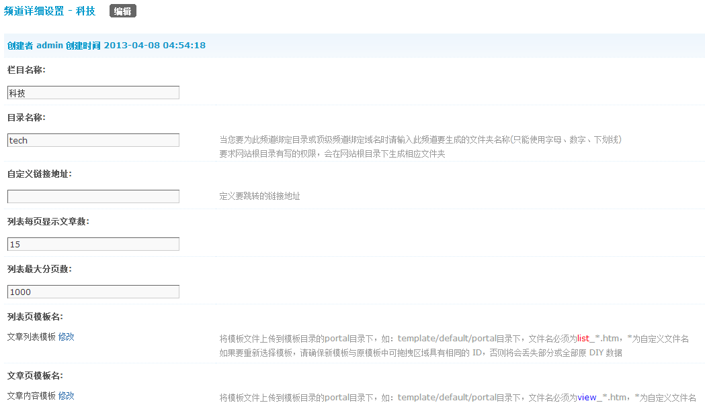
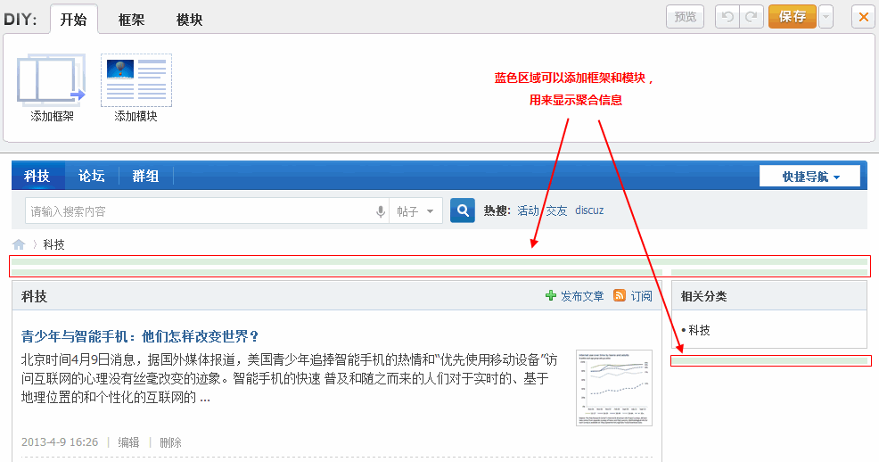

频道
频道，作为门户的重要组成部分，为门户划分出一块块各类版图。不同的频道，归类不同种类的内容，比如科技频道、读书频道、体育频道等等。在同一频道内，一方面可以创建对应种类的文章，还可以聚合社区内的同类精华内容。Discuz! X 作为社区化的平台，已经集成了门户的频道功能。
频道下的文章
频道的聚合效果
频道栏目，需要管理员在后台创建，点击后台 => 门户 => 频道栏目 => 添加频道:
按提示填写各项内容，填写完毕提交即可。新添加的频道，需要在开启后才能正常使用。
可以对频道进行 DIY 或套用模板，来实现聚合效果，如下：
DIY 是一项较为复杂的操作，需要操作者具有 HTML、CSS 技术，读者可以参考我们 DIY 教程，来打造纷繁的效果。